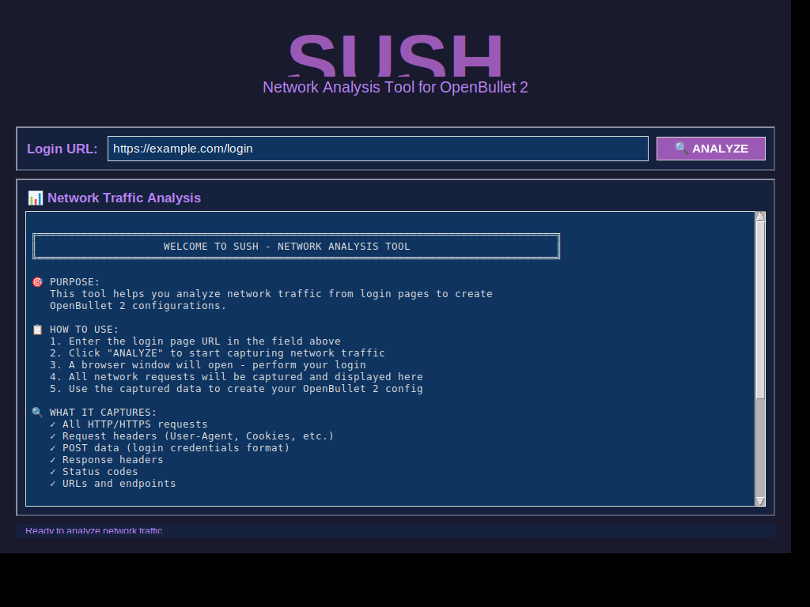

SUSH - Network Analysis Tool
GUI Screenshot

Features:
- Beautiful dark-themed GUI with purple accent colors
- Large "SUSH" title prominently displayed in purple (#9b59b6)
- URL input field for login page analysis
- Network traffic display area
- Detailed instructions and tips
- Captures all HTTP/HTTPS requests and responses
- Shows headers, cookies, POST data, and more
- Helps create OpenBullet 2 configurations